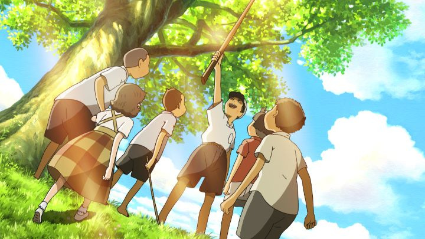

I still remember when it was announced, before 2009, that anime director Sunao Katabuchi would direct the family film "Mai Mai Miracle." My first thought was "wait... the guy who directed "Black Lagoonn"?". Yes, the director of a Tarantino-inspired action show, a particularly dark, serious and violent one of well-reknown, was making a kids' movie. It actually makes some sense for him, since in his deconds-long career, he worked on a few similar projects, including "Kiki's Delivery Service" and "Princess Arete" (the latter a film that, as of 2020, has not been released in the US, as I continue to wait patiently). His follow-up film was "In This Corner Of The World," another Japanese-set historical family film, continuing the trend. It is a little bit of a shame... he is a fine and versatile director, but he did have a special talent with adult violence. I also remember that "Mai Mai Miracle" had an unusual background involving Kickstarter and crowdfunding, at a time when few other feature films, let alone anime, attempted it. I forgot the details, and from what I can find, it was specifically for European distributor All The Anime to give it an English dub and release it on home video outside of Japan (even this is difficult to pinpoint; the campaign appeared to have ran in 2014, but Wikipedia says there were announcements or launches as early as 2012). The movie was released in 2009 after all, before Kickstarter was really a thing. I might have also confused it with "In This Corner Of The World," which had used crowdfunding (but not with Kickstarter) towards its initial producton in 2012 (perhaps tying in with headlines like "the director of "Mai Mai Miracle" is using crowdfunding to..."). Anyway, the point is that it did come out, eventually, in 2017. And North America would get a home release of the same company, in collaboration with RightStuf and Nozomi Entertainment (All The Anime has no mention on the box, but their logo is prominently shown in the disc credits, so presumably the same print was simply reused). That was in 2019, a full decade later. That's a long wait, but it's certainly not the only anime feature film to get missed for so long (a few odd standouts still allude English markets, as rare as it increasingly is). The Bluray package is barebones despite the pedigree, missing the opportunity to say "10th anniversary release" or "from the director of award-winning "In This Corner..."." Fitting with that, my impression is that it's a sleeper film that even most avid anime viewers wouldn't know existed. Even I might say that, AFTER having watched it... not exactly a great sign.Set about a decade after World War II, the movie takes place in a rural Japanese town of Mitajiri. There, farmers live peacefully. Shinko Aoki is a young girl, rambunctious and getting into trouble, but also curious, inquisitive and imaginative, spending her days daydreaming about the history of the town and its landscape, as told by her aging but wise grandfather. She'll imagine the stories in vivid detail, with crayon-colored figures walking through the streets, and her trying to bump into them as they pass by. During this time, a second girl from Tokyo moves to the town with her single father (we learn later her mother had died). Initially shy and not fitting in, Kiiko and Shinko become good friends, ultimately opening her up to the other kids in the town and having fun adventures together in the nearby forests and water canals. Those early scenes are ripe with details that are made richer with the historical context. The most noticable example is when Kiiko sits in her elementary-grade class for the first time, well-dressed and mannered, with an expensive personal set of colored pencils. By comparison, the other kids are all much more grubby, all barefoot and dirty (one conflict involves a snotty-nosed boy sharpening a pencil roughly with a knife opposed to a cleaner sharpener). You might think that this was normal for rural farmer families to how kids attended school, and that this was simply a matter of a city girl being a fish out of water with her "big city ways." But knowing the war wasn't long ago, you could guess what the economical impact was on Japan in particular, despite the few afluent families who got by. This detail is more noticable when within a couple years, all the kids are seen wearing shoes, not because Kiiko started some sort of trend, but presumably because they simply had access to them by then. There are other examples, from the whispers of adults, the factory and gambling districts outside of town, and an older kid that doesn't seem to go to school, cooly spending his time resting in the sun in a school uniform with his father's wooden katana like "Barefoot Gen."  Beyond that, the story itself is a coming-of-age slice-of-life sort of film, taking place over many months between the group of kids, and Shinko's little sister. Some of the events echo the plot details of "My Neighbor Totoro." Life goes on, with teachers getting married and leaving to the big city, and one late of an adult commiting suicide that takes things in an odd direction. It can be difficult to come up with a story of a kid's summer days, but in "Mai Mai Miracle," the plot seems especially random and without any specific purpose. The Wikipedia article comes to the rescue again, confirm this was based on an autobiography by Nobuko Takagi. Ah, things make more sense now. I've always found biographic films are generally dry and a little dull; after all, life doesn't have a simple beginning, middle and end. But trying to hide that in a family film that otherwise avoids mention of the real person or specific dates, seemed a bit misdirecting. Presumably the director (who also wrote the script) is interested in this period of history for his country, leading him to adapting a book that covered a child's point of view during the time. Regardless of the details and the context, I need a better story than this, and in particular an ending; failing to execute those makes "Mai Mai Miracle" a little too forgettable, however I might appreciate it. And then there's Shinko's imagination, which adds a bit of extra magic to the movie, thanks to some original use of mixed-styles of animation, and a dream or two when the girls pretend to be characters they aren't. The biggest "dream" story revolves around a young princess in the town, lonely in her castle, trying to make friends with a servant of a similar age that works alongside the moat. Apparently, this was based on yet a different historical book written over a thousand years ago (I don't know if it was reffered at all in the original autobiography). It was an inspired idea, but ultimately goes nowhere, making me wonder why it was included in the script at all. So the movie is full of a lot of interesting things that don't come together in a meaningfull way, resulting in a "meh" sort of experience. The production-side is similar: animated by Madhouse, it shares the quality of some of their owner lesser-known independent films from that decade, giving us nice pictures and colors (with particular detail to insides of homes), but still unmemorable. Of course, the Japanese dub makes sense here, but if wanting to share this will children, you'll be happy to know the English dub is more than adequete. The musical score by Shusei Murai and Minako Obata is the one standout, a chipper lighthearted series of vocal hums that sounds pleasent, appropriate, and more importantly, unique and memorable. I keep going on and giving a hard time to "Mai Mai Miracle" about being memorable. It's a fine movie, but I think most kids would just fall asleep through it, and that most adults would move on to the Ghibli movies it tries so hard to aspire to (to it's credit, I had similar reactions to "Only Yesterday" and "Ocean Waves," both with a time-period drama type of story). It's relevance is primarily for portraying a time in history that has largely been forgotten, not of the life-changing events or the immediate aftermath, but of the growth and continuation of life decades later. With that, it's a useful educational tool and great companion to someone studying Japanese 20th century history.
- "Ani" More reviews can be found at : https://2danicritic.github.io/ Previous review: review_Madoka_Magica_The_Movie_3_-_Rebellion Next review: review_Maquia_-_When_the_Promised_Flower_Blooms